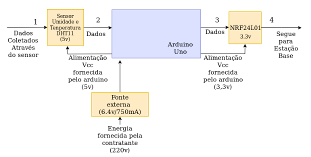

Diagrama de funcionamento da estação remota
A estação de transmissão dos dados pode ser representada pelo diagrama abaixo. Podemos ter uma ideia das etapas existentes nesta fase.
O módulo de transmissão funcionará da seguinte forma: primeiramente serão coletados os dados de temperatura e umidade do ar através do sensor DHT11 (Passo 1) alimentado por uma tensão de 5V fornecida pelo Arduino, logo após (Passo 2) os dados serão encaminhados para o microcontrolador Arduino Uno onde serão armazenados em uma estrutura de dados para então serem enviados (Passo 3) a estação base através de um módulo de comunicação via rádio (NRF24L01) que será alimentado pelo Arduino com uma tensão de 3,3V.
É importante destacar que o objetivo do projeto é realizar a captura dos dados em determinados horários do dia. Inicialmente a equipe está visando coletá-los nos respectivos horários 7:00 am,14:00 pm e 21:00 pm. É evidente que o projeto não será limitado a atender as leituras somente nesses horários, ficando desta maneira à escolha do usuário, assim o mesmo ficará responsável por alterar o código do dispositivo de acordo com suas necessidades.
Outro ponto essencial a ser discutido é que o componente de comunicação via rádio NRF24L01 pode se comunicar com até cinco outros módulos remotos, porém, devido o curto intervalo de tempo e a falta de recursos financeiros a equipe irá desenvolver o sistema apenas com uma estação remota.